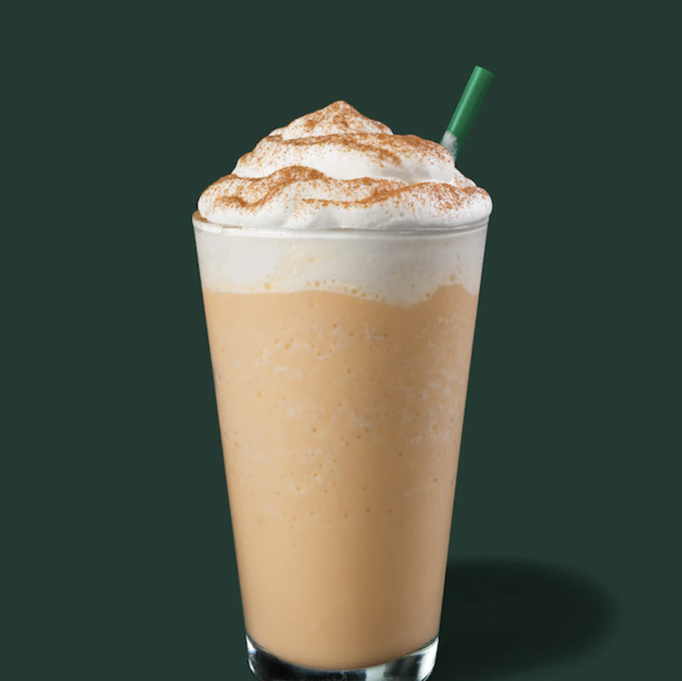
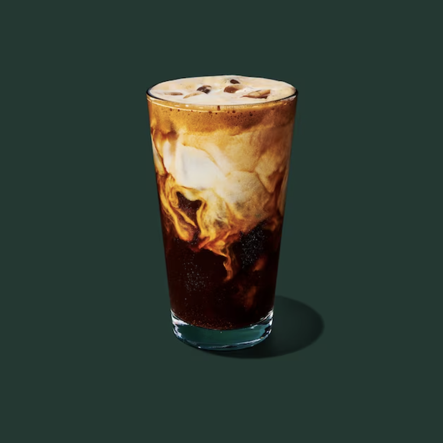
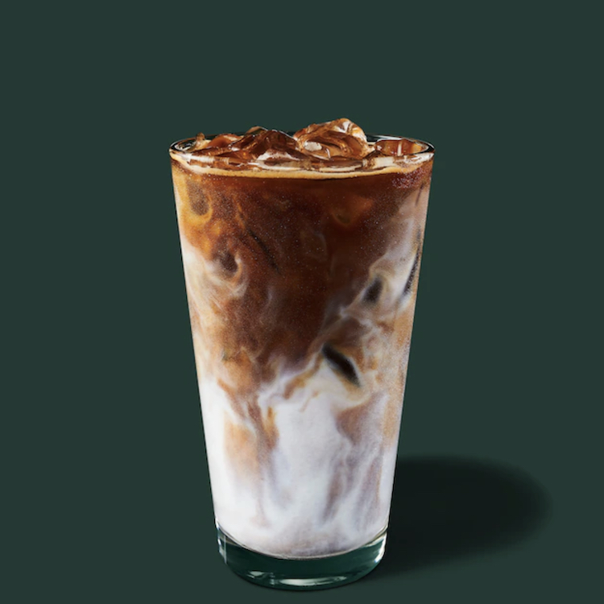

Гаряче яблучне хрустке макіато з вівсяного молока
Гаряча версія цього напою схожа на теплі обійми в свіжий осінній день, і
після трьох років яблучного хрусткого смаку Starbucks, схоже, нарешті
знайшов солодке місце.
Смак неймовірно затишний, а поєднання яблука та кави добре поєднується з
гарячим напоєм.
Фрапучино з гарбузовою спецією
Якщо вам потрібен справжній осінній напій, який має надзвичайно гарбузовий смак, насичений смаком і ностальгією, це напій для вас. Рік за роком ми всі вражені тим, наскільки нам це подобається, враховуючи, що ніхто з нас не замовляє Frappuccino регулярно. Це чудовий вибір, щоб побалувати себе чимось особливим.
Еспресо з яблуком і вівсяним молоком з льодом
Якщо ви цілий рік любите еспресо Iced Brown Sugar Oatmilk Shaken Espresso, вам сподобається ця яблучна версія як ваше улюблене осіннє частування. Додавання вівсяного молока та збовтаного еспресо означає, що смак яблука добре поєднується з самим напоєм, і в осінній день, коли погода занадто спекотна, це саме те, що ми хочемо потягнути.
Яблучний хрусткий макіато з льодом
Готується з вівсяного молока та світлого еспресо, тому отриманий смак трохи менше нагадує осінню свічку.